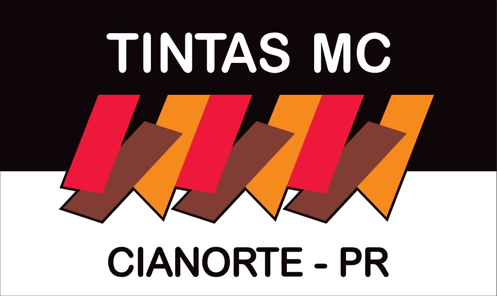

Banner 80 × 120 — Semana do Futuro 2026 · 4 versões
Protótipos de banner vertical 0,80 × 1,20 m (proporção 2:3, retrato — tipo roll-up / pull-up), uma versão por backdrop. Espelho de backdrop-prototipos.html no Design System NIA: preto base · gradiente índigo→ciano · Space Grotesk / IBM Plex Sans · o Elo como assinatura. Linha tracejada = margem de segurança. Trocar os QR placeholder pelo definitivo (Sympla/site) antes de fechar arte.
V1 · Palco
Composição central — logo, elo e datas


Uso: palco, recepção, fundo de foto individual. Trocar: QR pelo link Sympla.
V2 · Photo Wall
Step-and-repeat vertical — press wallUso: parede de fotos / stories. Trocar: densidade da grade (data-repeat) conforme a largura real.
V3 · Claro Editorial
Fundo papel — halls iluminados / totens
acontecendo em Cianorte.
Uso: ambientes claros. Trocar: versão escura do wordmark quando fechar (aqui vai no hero gradiente).
V4 · Xadrez
Tabuleiro 6×9 — placa central com a logoUso: impacto gráfico / grid modular. Trocar: densidade do tabuleiro (6×9) ajustável.
Specs de impressão (todas): 800 × 1200 mm · 100–150 dpi no tamanho final · CMYK · margem de segurança ≈ 8 cm (linha tracejada) · sangria 2 cm. QR: mínimo 15 × 15 cm impresso, quiet-zone livre, testar leitura a 1,5 m. Logos patrocinador: placeholders — versões vetoriais no fechamento.